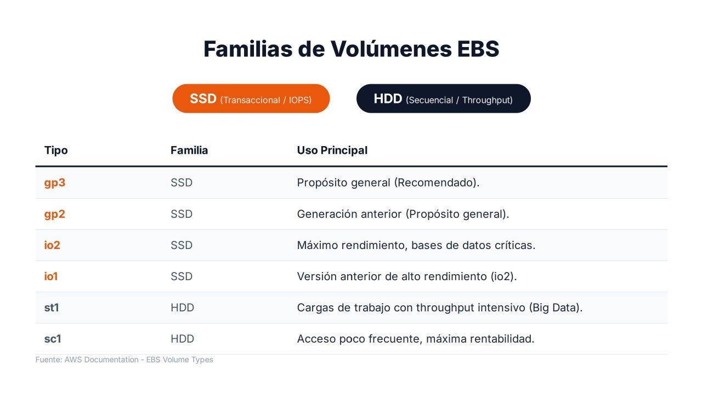

Tipos de volúmenes EBS¶

Una de las decisiones más importantes al diseñar una infraestructura en AWS es elegir correctamente el tipo de volumen. No todos los discos están pensados para las mismas cargas de trabajo: si se elige un volumen con más rendimiento del necesario se incrementan los costes, y si se elige uno insuficiente se generan cuellos de botella que afectan a toda la aplicación.
Dos familias: SSD y HDD¶
| Familia | Optimizada para | Métrica que importa | Tipos |
|---|---|---|---|
| SSD | Cargas transaccionales: operaciones pequeñas y aleatorias | IOPS y latencia | gp3, gp2, io2, io1 |
| HDD | Grandes flujos de datos secuenciales | Rendimiento (MiB/s) y coste por GiB | st1, sc1 |
IOPS y rendimiento
- Las IOPS miden cuántas operaciones de lectura o escritura se realizan por segundo. Importan cuando la aplicación hace muchos accesos pequeños y dispersos, como una base de datos.
- El rendimiento (throughput) mide cuántos datos se transfieren por segundo. Importa cuando se leen o escriben ficheros grandes de forma continua, como en analítica o en procesamiento de registros.
Ambos están relacionados: rendimiento ≈ IOPS × tamaño de la operación. Un volumen puede tener muchas IOPS y poco rendimiento, o al revés.
Volúmenes SSD¶
gp3: propósito general (recomendado)¶
gp3 es la opción recomendada para la mayoría de los despliegues y la que debería elegirse por defecto cuando no hay requisitos de rendimiento extremo.
Su principal ventaja es que permite configurar de forma independiente la capacidad, las IOPS y el rendimiento: ya no es necesario aumentar el tamaño del volumen solo para obtener más rendimiento.
- Todos los volúmenes incluyen un rendimiento base de 3.000 IOPS y 125 MiB/s, sea cual sea su tamaño.
- Se pueden aprovisionar IOPS y rendimiento adicionales, que se pagan aparte.
- Desde septiembre de 2025 admite hasta 64 TiB, 80.000 IOPS y 2.000 MiB/s por volumen.
Usos: discos de arranque, servidores web y de aplicaciones, entornos virtualizados, contenedores, sistemas empresariales estándar y bases de datos pequeñas o medianas.
gp2: propósito general de generación anterior¶
gp2 fue durante años el estándar de AWS. Su diferencia fundamental es que las IOPS dependen del tamaño: 3 IOPS por GiB (mínimo 100, máximo 16.000). Los volúmenes de menos de 1 TiB pueden realizar ráfagas de hasta 3.000 IOPS gastando créditos de E/S, cuyo saldo se observa en la métrica BurstBalance.
Esta dependencia obligaba con frecuencia a sobredimensionar la capacidad para alcanzar el rendimiento necesario. Por ejemplo, para obtener 6.000 IOPS sostenidas hacían falta 2.000 GiB, aunque solo se ocuparan 200.
Migrar de gp2 a gp3
gp3 ofrece un rendimiento base igual o superior a casi cualquier gp2 y su precio por GiB es aproximadamente un 20 % inferior. El cambio de tipo se hace en caliente, sin desadjuntar el volumen ni detener la instancia (aws ec2 modify-volume --volume-type gp3). Es una de las optimizaciones de coste más sencillas en una cuenta con volúmenes antiguos.
io2 Block Express: IOPS aprovisionadas¶
io2 pertenece a la categoría de alto rendimiento y está diseñado para aplicaciones críticas que requieren latencias muy bajas y un comportamiento predecible. Su objetivo no es el equilibrio entre coste y prestaciones, sino garantizar niveles de rendimiento elevados de forma constante.
- Hasta 64 TiB, 256.000 IOPS y 4.000 MiB/s por volumen, con hasta 1.000 IOPS por GiB.
- Durabilidad del 99,999 %, frente al 99,8–99,9 % del resto de tipos.
- Admite Multi-Attach y reservas NVMe.
Usos: bases de datos corporativas de misión crítica (Oracle Database, Microsoft SQL Server, SAP HANA), sistemas financieros y cualquier aplicación en la que una degradación del rendimiento tenga impacto directo en el negocio.
io1: IOPS aprovisionadas de generación anterior¶
io1 fue el precursor de io2 y comparte su filosofía: un número de IOPS garantizado y configurable (hasta 64.000 IOPS y 50 IOPS por GiB). Sigue siendo compatible, pero AWS recomienda io2 para nuevas implementaciones por su mayor durabilidad y rendimiento a un precio similar. En los entornos actuales aparece sobre todo por compatibilidad con infraestructuras existentes.
Volúmenes HDD¶
st1: HDD optimizado para rendimiento¶
En st1 lo importante no son las IOPS ni la latencia, sino la capacidad de mover grandes cantidades de datos de forma continua. Su rendimiento base crece con el tamaño (40 MiB/s por TiB) y puede alcanzar ráfagas de hasta 500 MiB/s.
Usos: plataformas Big Data, clústeres Hadoop, procesos ETL, análisis masivo y procesamiento de registros. Si una aplicación lee varios terabytes de forma secuencial, st1 resulta más eficiente y económico que un SSD.
sc1: HDD de bajo coste¶
sc1 es la opción más económica de EBS, pensada para datos de acceso poco frecuente en los que el objetivo es minimizar el gasto. Su rendimiento máximo es de 250 MiB/s.
Usos: archivos históricos, registros antiguos, repositorios documentales o información que debe conservarse durante años y rara vez se consulta. No es adecuado para aplicaciones activas ni para bases de datos: se sacrifica velocidad para obtener el menor coste posible.
Limitaciones de los volúmenes HDD
- No pueden ser volumen de arranque.
- Su tamaño mínimo es de 125 GiB.
- Rinden mal con operaciones pequeñas y aleatorias: una base de datos sobre
st1osc1sufrirá latencias muy elevadas.
Resumen comparativo¶
| Tipo | Familia | Tamaño | IOPS máx. | Rendimiento máx. | Arranque | Multi-Attach | Uso principal |
|---|---|---|---|---|---|---|---|
| gp3 | SSD | 1 GiB – 64 TiB | 80.000 (3.000 incluidas) | 2.000 MiB/s (125 incluidos) | Sí | No | Propósito general (recomendado) |
| gp2 | SSD | 1 GiB – 16 TiB | 16.000 (3 por GiB) | 250 MiB/s | Sí | No | Propósito general (anterior) |
| io2 Block Express | SSD | 4 GiB – 64 TiB | 256.000 | 4.000 MiB/s | Sí | Sí | Bases de datos críticas |
| io1 | SSD | 4 GiB – 16 TiB | 64.000 | 1.000 MiB/s | Sí | Sí | Alto rendimiento (anterior) |
| st1 | HDD | 125 GiB – 16 TiB | 500 | 500 MiB/s | No | No | Big Data, ETL, registros |
| sc1 | HDD | 125 GiB – 16 TiB | 250 | 250 MiB/s | No | No | Datos fríos, mínimo coste |
Límites de la instancia
El rendimiento real está limitado también por la instancia: cada tipo de instancia tiene un máximo de IOPS y de ancho de banda hacia EBS. Un volumen io2 de 100.000 IOPS adjuntado a una instancia pequeña no alcanzará ese valor. Al dimensionar hay que comprobar ambos límites.
Cómo elegir el tipo de volumen¶
Como regla general:
- Para una máquina virtual estándar, se utiliza
gp3. - Para una base de datos crítica con requisitos estrictos de rendimiento y latencia,
io2. - Para grandes volúmenes de datos secuenciales orientados a analítica o Big Data,
st1. - Para almacenamiento de bajo coste con acceso ocasional,
sc1.
| Escenario | Volumen | Justificación |
|---|---|---|
| Servidor web Apache con WordPress | gp3 20 GiB |
Rendimiento base suficiente y coste mínimo |
| Base de datos MySQL de una tienda online mediana | gp3 con IOPS adicionales |
Se ajustan las IOPS sin sobredimensionar el tamaño |
| SQL Server con miles de transacciones por segundo | io2 |
Latencia estable y rendimiento garantizado |
| Clúster de procesamiento de registros de 8 TiB | st1 |
Lectura secuencial masiva a bajo coste |
| Archivo de documentación legal de 10 años | sc1 (o S3 Glacier) |
Acceso muy ocasional; prima el coste |
La elección correcta no solo afecta al rendimiento de la aplicación, sino también al coste operativo de toda la infraestructura. Además, gracias a Elastic Volumes, el tipo puede cambiarse más adelante si la monitorización demuestra que la elección inicial no era la adecuada.
Referencias¶
- AWS. Amazon EBS volume types — Tipos de volúmenes
- AWS. General Purpose SSD volumes — Volúmenes gp2 y gp3
- AWS. Provisioned IOPS SSD volumes — Volúmenes io1 e io2
- AWS. Throughput Optimized HDD and Cold HDD volumes — Volúmenes st1 y sc1
- AWS. Amazon EBS increases the maximum size and provisioned performance of General Purpose (gp3) volumes (09/2025) — Anuncio
- AWS. Amazon EBS-optimized instance types — Límites de la instancia